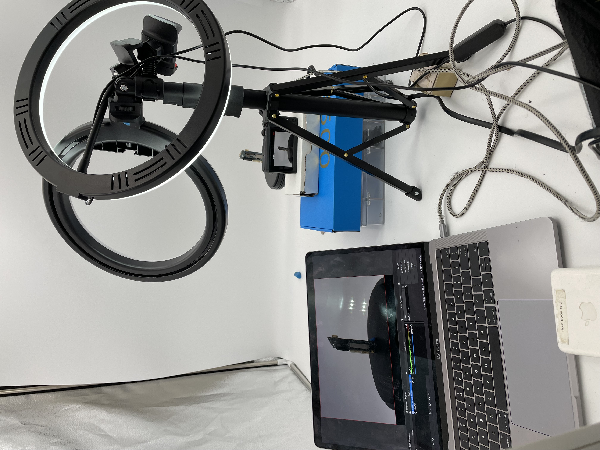

AUVSI Marketing Video
Technical Documentation and Product Marketing Intern — ModalAI
June 2021 — Present
Background
ModalAI regularly enters in awards relating to the drone hardware and software industry. ModalAI entered for the AUVSI award show, which required a promotional video on its groundbreaking new VOXL2 product lineup. With the help of the marketing director for the voiceover, I produced, shot, and edited a short marketing clip showcasing VOXL2 and its new features and specs.
Production
This was my first time creating a promotional video of this kind. It was a lot of fun to shoot with a turntable and it involved a lot of creative solutions like holding up the PCB with modeling clay, stacking boxes for the right camera height, and adding additional lights for the perfect shot. It was a lot of fun to edit turntable footage and to play around with speed and reversing the clip. I also got some hands on experience with adding keyframes and effects in adobe premiere pro. Overall, it was a fun little project!
